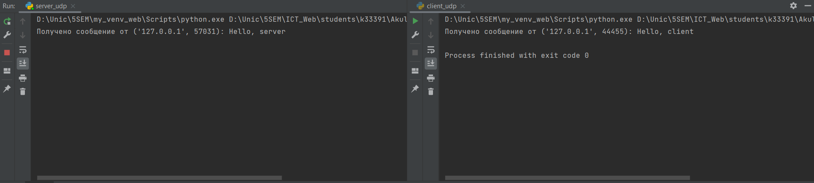
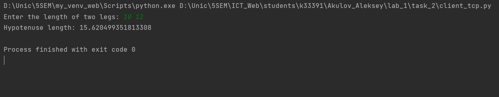
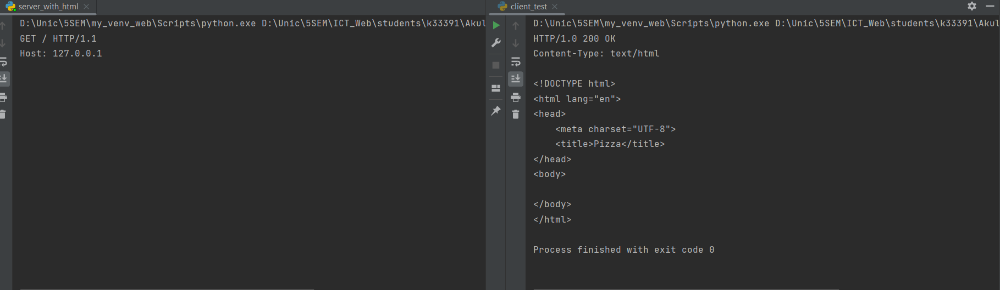
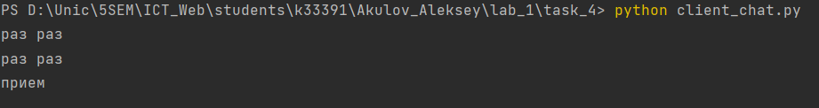
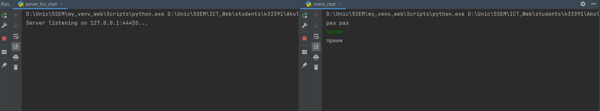
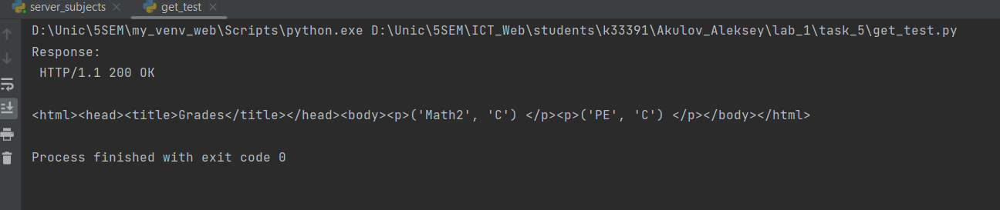
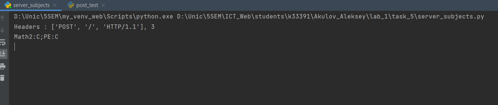

Отчет по лабораторной работе №1
Выполнил: Акулов Алексей, K33391
Цель работы:
Овладеть практическими навыками и умениями реализации web-серверов и использования сокетов.
Задание 1
Текст задания:
Реализовать клиентскую и серверную часть приложения. Клиент отсылает серверу сообщение «Hello, server». Сообщение должно отразиться на стороне сервера. Сервер в ответ отсылает клиенту сообщение «Hello, client». Сообщение должно отобразиться у клиента. Обязательно использовать библиотеку socket. Реализовать с помощью протокола UDP.
Реализация сервера:
import socket
IP = "127.0.0.1"
PORT = 44455
def main():
server_socket = socket.socket(socket.AF_INET, socket.SOCK_DGRAM)
server_socket.bind((IP, PORT))
while True:
data, addr = server_socket.recvfrom(1024)
print(f"Получено сообщение от {addr}: {data.decode()}")
response = "Hello, client"
server_socket.sendto(response.encode(), addr)
if __name__ == "__main__":
main()
Реализация пользователя:
import socket
SERVER_IP = "127.0.0.1"
SERVER_PORT = 44455
def main():
client_socket = socket.socket(socket.AF_INET, socket.SOCK_DGRAM)
message = "Hello, server"
client_socket.sendto(message.encode(), (SERVER_IP, SERVER_PORT))
data, addr = client_socket.recvfrom(1024)
print(f"Получено сообщение от {addr}: {data.decode()}")
if __name__ == "__main__":
main()
Работа:

Задание 2
Текст задания:
Реализовать клиентскую и серверную часть приложения. Клиент запрашивает у сервера выполнение математической операции, параметры, которые вводятся с клавиатуры. Сервер обрабатывает полученные данные и возвращает результат клиенту. Вариант с учетом номера в журнале:
Нахождение гипотенузы
Обязательно использовать библиотеку socket Реализовать с помощью протокола TCP
Решение
Запускаем цикл, ожидая запроса от клиента, когда получаем запрос отправляем ему решение задачи
Пользователь вводит данные: 2 катета прямоугольного треугольника. Получает с сервера ответ.
Реализация сервера:
import socket
import math
IP = "127.0.0.1"
PORT = 44455
codage = 'utf-8'
def solve_hypotenuse(a, b):
return math.sqrt(a ** 2 + b ** 2)
def main():
server_socket = socket.socket(socket.AF_INET, socket.SOCK_STREAM)
server_socket.bind((IP, PORT))
server_socket.listen(10)
while True:
try:
outer_socket, addr = server_socket.accept()
received_string = outer_socket.recv(1024).decode(codage)
a, b = map(float, received_string.split())
result = solve_hypotenuse(a, b)
outer_socket.send(str(result).encode(codage))
except KeyboardInterrupt:
server_socket.close()
break
if __name__ == "__main__":
main()
Реализация пользователя:
import socket
IP = "127.0.0.1"
PORT = 44455
codage = 'utf-8'
def main():
client_socket = socket.socket(socket.AF_INET, socket.SOCK_STREAM)
client_socket.connect((IP, PORT))
inp_string = input("Enter the length of two legs: ").encode(codage)
client_socket.send(inp_string)
result = client_socket.recv(1024).decode(codage)
print(f"Hypotenuse length: {result}")
client_socket.close()
if __name__ == "__main__":
main()
Работа:

Задание 3
Текст задания:
Реализовать серверную часть приложения. Клиент подключается к серверу. В ответ клиент получает http-сообщение, содержащее html-страницу, которую сервер подгружает из файла index.html.
Решение
Создаем цикл для работы сервера и ожидания запроса пользователя. Когда получаем запрос, отправляем страницу и ответ статус ответа
Реализация сервера:
import socket
import math
IP = "127.0.0.1"
PORT = 44455
codage = 'utf-8'
def main():
server_socket = socket.socket(socket.AF_INET, socket.SOCK_STREAM)
server_socket.bind((IP, PORT))
server_socket.listen(10)
while True:
try:
outer_socket, addr = server_socket.accept()
request = outer_socket.recv(1024).decode(codage)
print(request)
response_type = "HTTP/1.0 200 OK\n"
headers = "Content-Type: text/html\n\n"
with open("index.html", "r") as f:
body = f.read()
response = response_type + headers + body
outer_socket.send(response.encode(codage))
outer_socket.close()
except KeyboardInterrupt:
server_socket.close()
break
if __name__ == "__main__":
main()
Реализация пользователя:
import socket
IP = "127.0.0.1"
PORT = 44455
codage = 'utf-8'
def main():
client_socket = socket.socket(socket.AF_INET, socket.SOCK_STREAM)
client_socket.connect((IP, PORT))
request = "GET / HTTP/1.1\r\nHost: %s" % IP
client_socket.sendall(request.encode(codage))
result = client_socket.recv(1024).decode(codage)
print(result)
client_socket.close()
if __name__ == "__main__":
main()
Сайт:
<!DOCTYPE html>
<html lang="en">
<head>
<meta charset="UTF-8">
<title>Pizza</title>
</head>
<body>
</body>
</html>
Работа:

Задание 4
Текст задания:
Реализовать двухпользовательский или многопользовательский чат. Реализация многопользовательского часа позволяет получить максимальное количество баллов. Обязательно использовать библиотеку threading.
Для применения с TCP необходимо запускать клиентские подключения. И прием, и отправку сообщений всем юзерам на сервере в потоках. Не забудьте сохранять юзеров, чтобы потом отправлять им сообщения.
Решение:
Основной момент - поддерживать всех текущих пользователей в глобальном массиве на сервере. Необходимо создать два метода работы с клиентом: один отвечает за треда под одного из пользователей, а второй за отправку им всем сообщения
Реализация сервера:
import socket
import threading
IP = "127.0.0.1"
PORT = 44455
codage = 'utf-8'
clients = []
client_names = {}
def elim_client(client_socket):
client_socket.close()
if client_socket in clients:
clients.remove(client_socket)
if client_socket in client_names:
del client_names[client_socket]
def sharing_message(message, sender_socket):
for client in clients:
if client != sender_socket:
try:
client.send(message)
except:
elim_client(client)
def handle_client(client_socket):
name = client_socket.recv(1024).decode(codage)
client_names[client_socket] = name
print(f"{name} has joined the chat!")
welcome_msg = f"{name} has joined the chat!".encode(codage)
sharing_message(welcome_msg, client_socket)
while True:
try:
message = client_socket.recv(1024)
formatted_message = f"{name}: {message.decode(codage)}".encode(
codage)
sharing_message(formatted_message, client_socket)
except:
print(f"{name} has left the chat!")
leave_msg = f"{name} has left the chat!".encode(codage)
sharing_message(leave_msg, None)
elim_client(client_socket)
break
def main():
server_socket = socket.socket(socket.AF_INET, socket.SOCK_STREAM)
server_socket.bind((IP, PORT))
server_socket.listen(15)
print(f"Server listening on {IP}:{PORT}...")
while True:
client_socket, addr = server_socket.accept()
clients.append(client_socket)
client_thread = threading.Thread(target=handle_client,
args=(client_socket,))
client_thread.start()
if __name__ == "__main__":
main()
Реализация клиента:
import socket
import threading
IP = "127.0.0.1"
PORT = 44455
codage = 'utf-8'
def receive(client_socket):
while True:
message = client_socket.recv(1024).decode(codage)
print(message)
def send(client_socket):
while True:
message = input()
client_socket.send(message.encode(codage))
def main():
client_socket = socket.socket(socket.AF_INET, socket.SOCK_STREAM)
client_socket.connect((IP, PORT))
username = input("Enter your username: ")
client_socket.send(username.encode(codage))
receive_thread = threading.Thread(target=receive, args = (client_socket, ))
send_thread = threading.Thread(target=send, args = (client_socket, ))
receive_thread.start()
send_thread.start()
if __name__ == "__main__":
main()
Работа:
 
Задание 5
Текст задания:
Необходимо написать простой web-сервер для обработки GET и POST http запросов средствами Python и библиотеки socket.
Задание: сделать сервер, который может:
● Принять и записать информацию о дисциплине и оценке по дисциплине.
● Отдать информацию обо всех оценках по дисциплине в виде html-страницы.
Решение
Используя шаблон реализуем сервер, сокращая send_response и parse_headers
Реализация сервера:
import socket
import sys
class MyHTTPServer:
# Параметры сервера
def __init__(self, ip, port, codage):
self.ip = ip
self.port = port
self.grades = {}
self.codage = codage
def serve_forever(self):
#1. Запуск сервера на сокете, обработка входящих соединений
server_socket = socket.socket(socket.AF_INET, socket.SOCK_STREAM)
server_socket.bind((self.ip, self.port))
server_socket.listen(10)
while True:
client_socket, addr = server_socket.accept()
self.serve_client(client_socket)
def serve_client(self, client_socket):
# 2. Обработка клиентского подключения
data = client_socket.recv(1024).decode(self.codage)
try:
request = self.parse_request(data)
response = self.handle_request(request)
if response:
client_socket.send(response.encode('utf-8'))
except Exception as e:
error_msg = "HTTP/1.1 400 Bad Request\n\n"
client_socket.send(error_msg.encode('utf-8'))
finally:
client_socket.close()
def parse_request(self, data):
# 3. функция для обработки заголовка http+запроса.
# Python, сокет предоставляет возможность создать вокруг него некоторую обертку,
# которая предоставляет file object интерфейс. Это дайте возможность построчно обработать запрос.
# Заголовок всегда - первая строка. Первую строку нужно разбить на 3 элемента (метод + url + версия протокола).
# URL необходимо разбить на адрес и параметры (isu.ifmo.ru/pls/apex/f?p=2143 ,
# где isu.ifmo.ru/pls/apex/f, а p=2143 - параметр p со значением 2143)
lines = data.split('\r\n')
headers = lines[0].split()
print(f"Headers : {headers}, {len(headers)}")
if len(headers) != 3:
raise Exception("Bad request line")
body = lines[-1]
print(body)
grds = {}
if ":" in body:
grds = {grade.split(":")[0]: grade.split(":")[1]
for grade in body.split(";")}
request = {"method": headers[0], "url": headers[1],
"version": headers[2], "grades": grds}
return request
def handle_request(self, request):
# 5. Функция для обработки url в соответствии с нужным методом.
# В случае данной работы, нужно будет создать набор условий,
# который обрабатывает GET или POST запрос.
# GET запрос должен возвращать данные.
# POST запрос должен записывать данные на основе переданных параметров.
if request["method"] == "POST":
for subject, grade in request["grades"].items():
if subject not in self.grades:
self.grades[subject] = []
self.grades[subject].extend(grade)
#with open('index.html', 'r') as f:
return f"HTTP/1.1 200 OK\n\n"
elif request["method"] == "GET":
response = f"HTTP/1.1 200 OK\n\n" \
+ "<html><head><title>Grades</title></head><body>"
response += "<table border='1'>"
response += "<tr><th>Subject</th><th>Grades</th></tr>"
for subject, grades in self.grades.items():
grades_str = ", ".join(map(str, grades))
response += f"<tr><td>{subject}</td><td>{grades_str}</td></tr>"
response += "</table>"
response += "</body></html>"
return response
else:
return "HTTP/1.1 405 Something wrong with request\n\n"
#def send_response(self, *):
# 6. Функция для отправки ответа. Необходимо записать в соединение status line вида HTTP/1.1 <status_code> <reason>.
# Затем, построчно записать заголовки и пустую строку, обозначающую конец секции заголовков.
if __name__ == '__main__':
IP = "127.0.0.1"
PORT = 44455
codage = 'utf-8'
serv = MyHTTPServer(IP, PORT, codage)
try:
serv.serve_forever()
except KeyboardInterrupt:
pass
POST запрос:
import socket
def test_post_request():
IP = "127.0.0.1"
PORT = 44455
grades = {
'Math2': 'С',
'PE': 'C'
}
data = ';'.join([f"{key}:{value}" for key, value in grades.items()])
headers = f"POST / HTTP/1.1\r\nContent-Length: {len(data)}\r\n\r\n{data}"
test_socket = socket.socket(socket.AF_INET, socket.SOCK_STREAM)
test_socket.connect((IP, PORT))
test_socket.sendall(headers.encode())
response = test_socket.recv(1024)
print("Response:\n", response.decode())
if __name__ == "__main__":
test_post_request()
GET запрос:
import socket
IP = "127.0.0.1"
PORT = 44455
def test_get_request():
request = f"GET / HTTP/1.1\r\nHost: {IP}\r\n\r\n"
test_socket = socket.socket(socket.AF_INET, socket.SOCK_STREAM)
test_socket.connect((IP, PORT))
test_socket.sendall(request.encode())
response = test_socket.recv(1024)
print("Response:\n", response.decode())
if __name__ == "__main__":
test_get_request()
Работа


Вывод
При выполнении данной лабораторной работы я изучил работу с сокетами, TCP, UDP, HTTP сервера, научился работать с запросами.